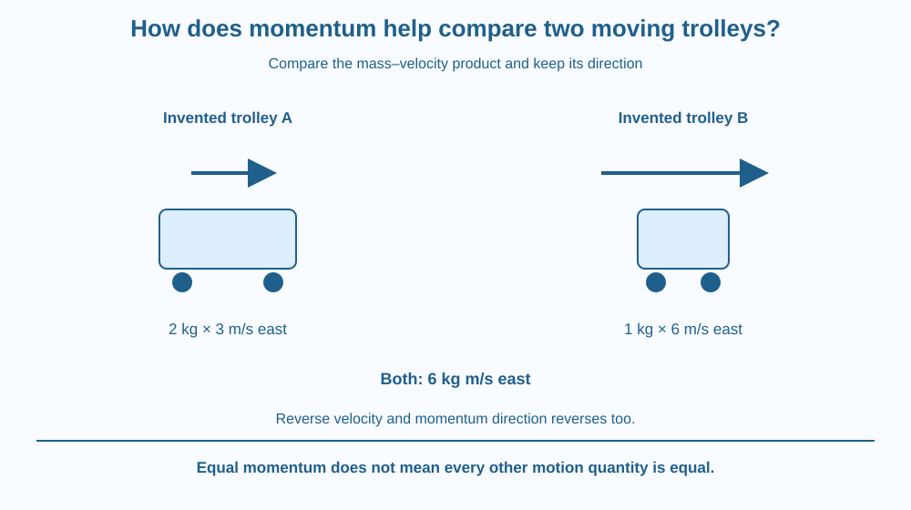

Calculate momentum as mass multiplied by velocity and keep its direction explicit. Compare different moving trolleys without using mass or speed alone as the whole description. Distinguish momentum from force and avoid assuming equal momentum means every feature of a motion is identical.
A heavy trolley moving slowly and a lighter trolley moving faster can have the same momentum. Looking only at the larger mass or the greater speed would miss that possibility.
The quantity combines the two. It also keeps direction, so trolleys moving in opposite directions can have momenta that differ even if their masses and speed readings match.
Why introduce another motion quantity? Because it provides a useful numerical description that responds to both the amount of material and its velocity, rather than reducing the moving system to one of those features alone.
For an ordinary nonrelativistic object, momentum = mass × velocity, written p = mv. Mass is a scalar, while velocity is a vector, so momentum points in the same direction as velocity for positive mass.
The SI unit is kilogram metre per second, written kg m/s. It is not a newton, the unit of force, and not a joule, the unit of energy. Units help prevent different physical quantities from being treated as interchangeable.
Consider invented trolley A with mass two kilograms moving east at three metres per second. Its momentum is six kilogram metres per second east. Trolley B with mass one kilogram moving east at six metres per second has the same momentum in this model.
Now reverse B's direction. Its momentum points west, so it no longer matches A's vector momentum. In one dimension, choose east positive and write the values as plus six and minus six. The sign convention must be stated.
For the same velocity, doubling mass doubles momentum. For the same mass, doubling velocity doubles momentum. These are conditional comparisons. Changing both factors together requires their product rather than a slogan that the heavier object always has more momentum.
Momentum differs from force. A trolley can have momentum while moving steadily, even when its net force is approximately zero in a simplified model. Force concerns interaction and change, not a stored substance carried inside the object.
Equal momentum does not mean identical mass, velocity, energy or behaviour under every later interaction. The comparison tells you one combined quantity is equal. Other questions need their own variables and conditions.
This lesson focuses on defining and comparing momentum. Later lessons use it in recoil and stopping-time relationships. We do not import those whole mechanisms here; understanding the product and direction first provides a sound foundation for interpreting them.
Draw two trolley cards with separate mass and velocity boxes. Multiply each pair and attach a direction arrow to the result. Keep the input values visible so the same final number can be traced back to different combinations.
Make a second set with equal masses and opposite arrows. The momentum magnitudes match, but the vectors do not. An unsigned number alone loses the direction information.
Then change one input at a time. This makes the proportional relationships testable in the model. If both mass and velocity are altered, calculate the product explicitly rather than guessing from whichever change looks more dramatic.
The SVG shows the two invented east-moving trolleys with different masses and speeds but the same momentum. A third arrow reverses one trolley's direction to show the vector distinction.
A unit panel separates kg m/s from force and energy units. The arrows are labelled velocity or momentum so their purpose is unambiguous. Trolley sizes are symbolic, not realistic dimensions.
The graphic does not show a collision, a gravitational orbit or a real experiment. Its aim is a quantitative comparison using defined inputs, preserving the different targets of the later recoil and impulse lessons.

A loaded hand trolley and an unloaded one can differ in momentum even at similar speed. The example helps explain why describing moving equipment requires more than a speed number.
A cricket ball and a much heavier slow object can be compared using the same formula if mass, velocity and direction are known. That comparison alone does not establish a safe impact or a complete damage prediction.
Students do not need to push loaded trolleys, create collisions or throw objects for this lesson. Paper values separate the calculation from the practical hazards and additional complexities of real contact events.
Use paper, a pencil and a calculator if needed.
Label the data invented. Do not turn the numbers into a collision prediction or call momentum a force. The exercise tests the product, units and vector direction without moving heavy objects.
Can a lighter object have greater momentum than a heavier one? State the velocity condition rather than answering from mass alone.
Now compare two objects with equal momentum magnitude but opposite directions. Why would a record containing only the magnitude be incomplete? Explain what the direction contributes to the physical description without jumping ahead to a specific collision law.
How is ordinary momentum calculated?
Answer: C — Momentum combines mass with vector velocity.
Why must momentum direction be recorded?
Answer: B — For positive mass, momentum points along velocity and can reverse when velocity reverses.
Invented trolley mass is 2 kg and velocity 3 m/s east. What is its momentum?
Answer: A — The product of 2 kilograms and 3 metres per second is 6 kilogram metres per second east.
Create four fictional trolley cards: equal mass with different velocities, equal velocity with different masses, equal momentum from different products and equal magnitude with opposite directions.
Calculate each result with units and a sign convention. Add a caption explaining why equal momentum is not a claim that all other motion quantities match. No practical pushing or collision activity should be included.
One combined number can stay the same while its two input factors change. Momentum makes that trade-off explicit, but its arrow adds another layer: equal numerical magnitudes can still describe opposite vectors. Keeping inputs, units and direction together prevents a simple calculation from becoming a misleading summary.
Momentum is mass times velocity, with direction; compare the product and vector rather than assuming mass or speed alone determines it.